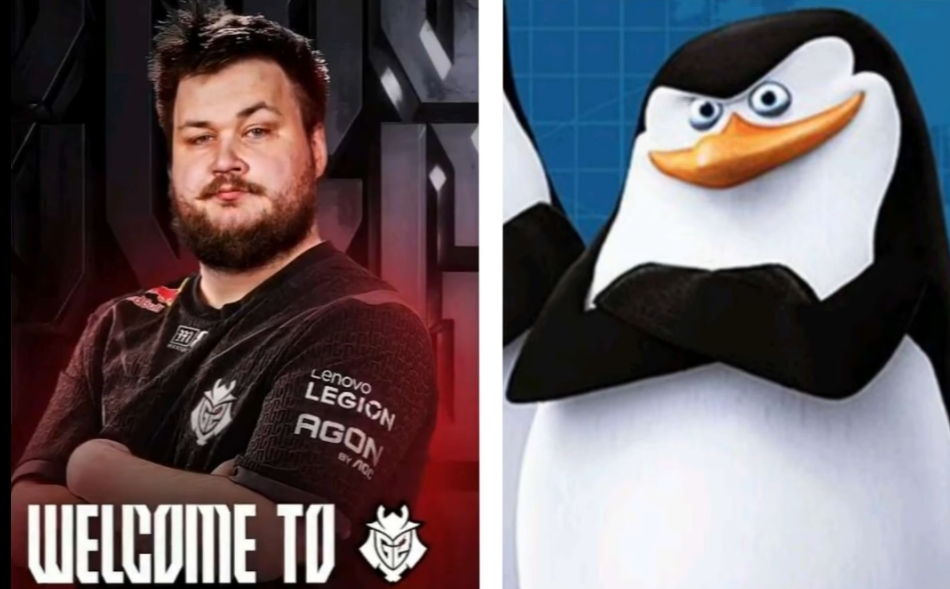

G2-Esport

Snax，全名Janusz "Snax" Pogorzelski，是一位著名的CS职业选手，因其强悍的实力和在比赛中的出色表现而被誉为“波兰巨熊”。Snax的职业生涯始于2010年，早期在波兰的CS圈中崭露头角。他在2013年加入了Unicersal Soldiers战队，并在DreamHack冬季赛上有出色表现，尽管最终未能夺冠，但他的表现依然引人注目
Snax在2014年加入了Virtus.pro（简称VP）战队，成为该战队的核心成员之一。在VP期间，他帮助队伍赢得了多个重要赛事的冠军，包括2018年ESL One纽约和2014年ESL卡托维兹Major。他的个人表现也极为出色，多次在关键比赛中发挥关键作用，尤其是在对阵强队时的连杀表现让他赢得了大量粉丝.
Snax的职业生涯经历了多次转会，2014年至2018年效力于VP，之后在2023年9月至2024年7月转会至GamerLegion，并在2024年7月加入G2。尽管他在比赛中多次展现出强大的个人能力，但他的职业生涯也经历了不少起伏和挑战
在数据方面，Snax的rating（每局得分）和DPR（回合平均死亡）等数据均表现出色，尤其是在火力输出方面，他的表现甚至超过了大多数一线步枪手指挥。尽管在某些数据上如KAST（成功回合占比）上表现中庸，但总体来说，Snax在比赛中的表现依然具有很高的竞争力

